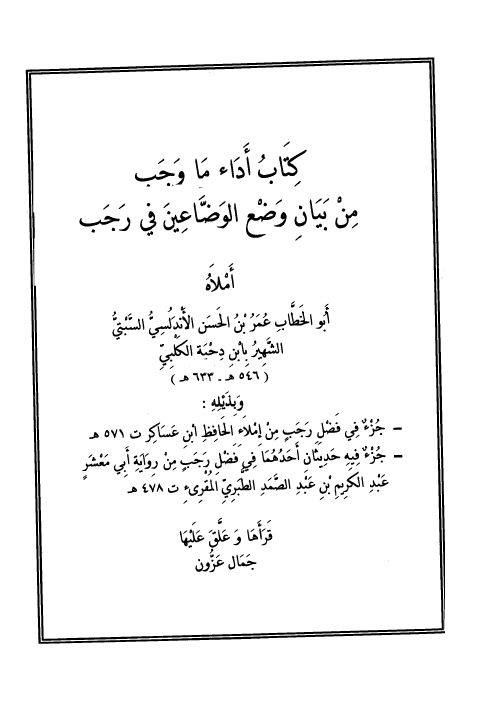

Authors
جمال عزون
Author
Resources
جزء فيه حديثان أحدهما في فضل رجب لأبي معشر الطبري
جزء فيه حديثان أحدهما في فضل رجب لأبي معشر الطبري
عبد الكريم بن عبد الصمد الطبري المقرئ
جزء في فضل رجب
جزء في فضل رجب
علي بن الحسن بن هبة الله ابن عساكر

كتاب أداء ما وجب من بيان وضع الوضاعين في رجب وبذيله جزء في فضل رجب وجزء فيه حديثان
كتاب أداء ما وجب من بيان وضع الوضاعين في رجب وبذيله جزء في فضل رجب وجزء فيه حديثان
عمر بن حسن الأندلسي ابن دحية الكلبي